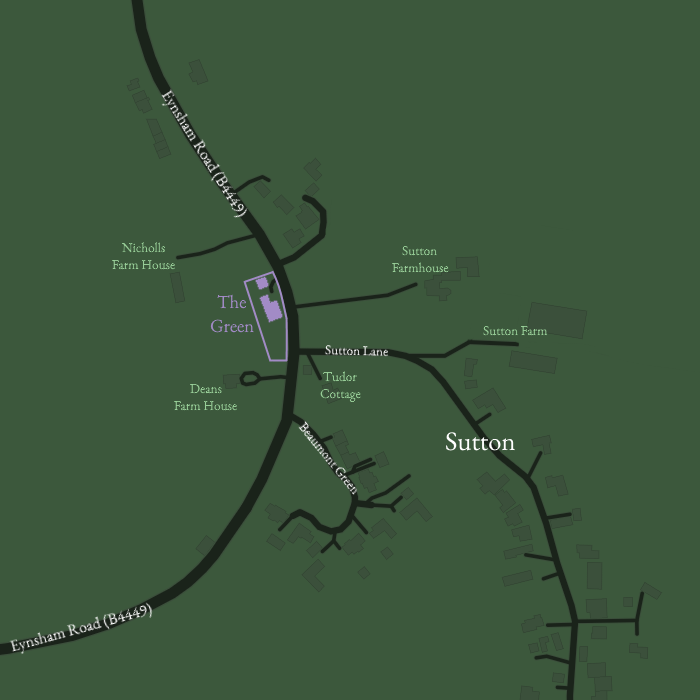
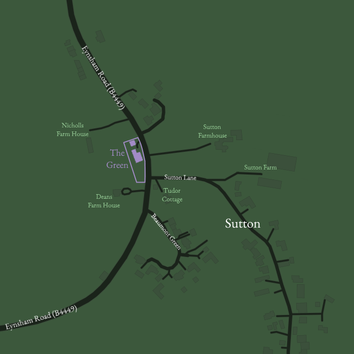

The Green
Eynsham Road, Sutton, Witney, OX29 5RZ, United Kingdom
51° 45′ 26.6″ N, 001° 24′ 02.5″ W, 114m ASL (OS Grid Reference: SP4136006742)
Home of the Q-T-A family.
Eynsham Road, Sutton, Witney, OX29 5RZ, United Kingdom
51° 45′ 26.6″ N, 001° 24′ 02.5″ W, 114m ASL (OS Grid Reference: SP4136006742)
Home of the Q-T-A family.
